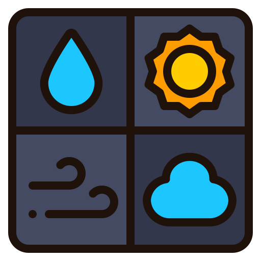

Principais Projetos
Lista de Tarefas
"Página Web para Organizar Tarefas diárias, as mesmas podendo ser incluídas e excluídas pelo usuário. Feito com Html, Css e Js."
Ver Projeto

Previsão do Tempo
"Aplicação Web consumindo API externa para retornar dados de Previsão do Tempo, graus, humidade de cada cidade, esta podendo ser buscara pelo um usuário. Feito com Html, Css e Js."
Ver Projeto